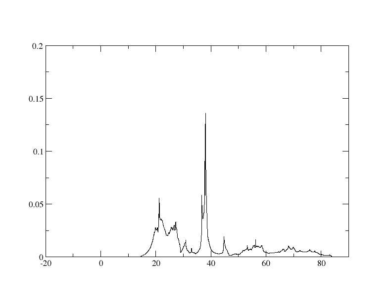
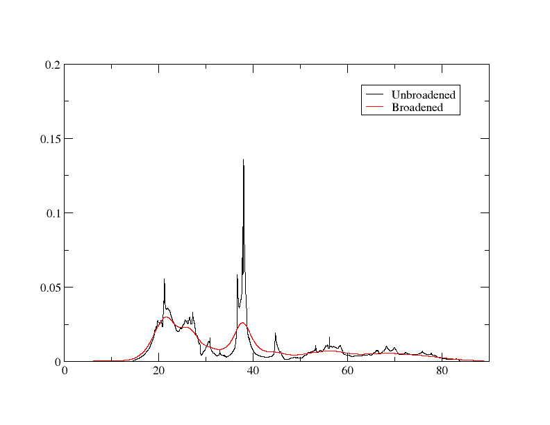
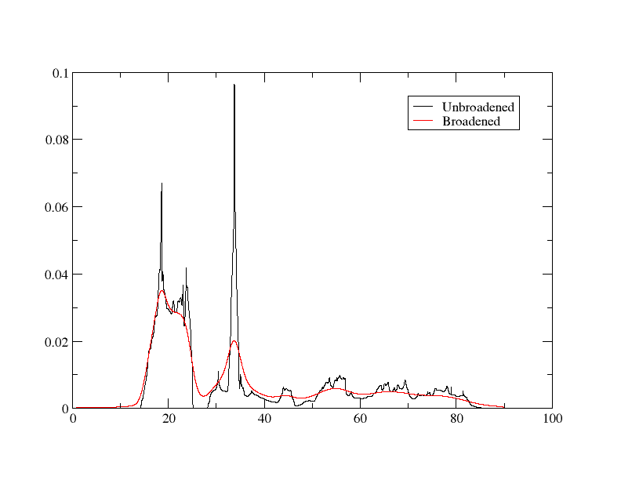
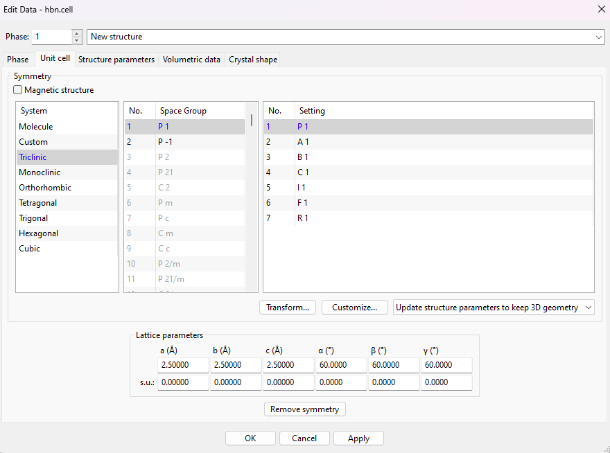
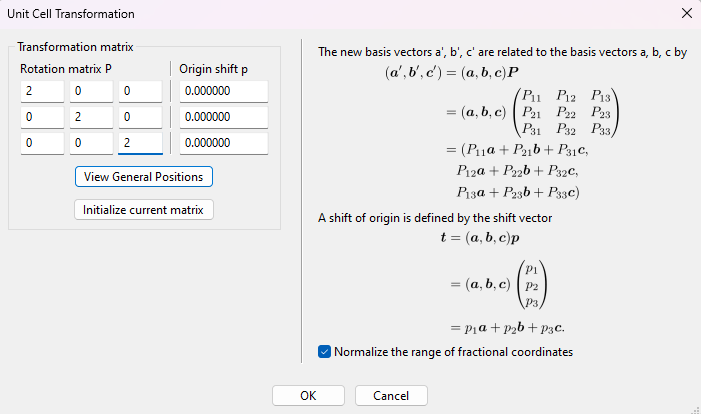
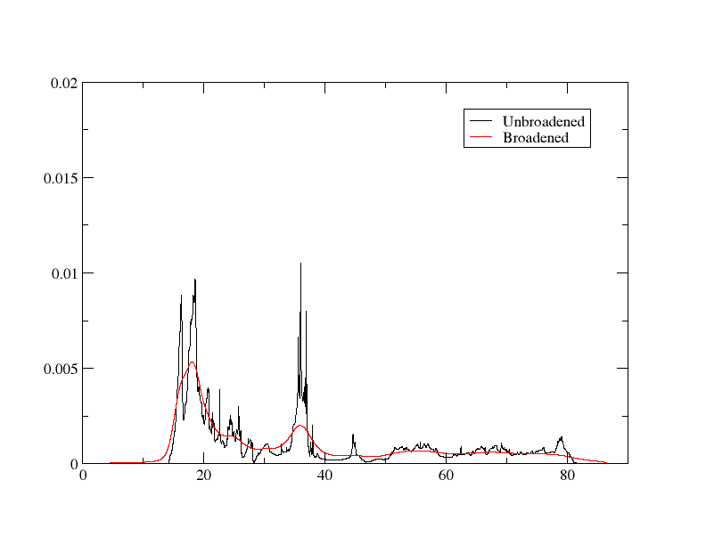
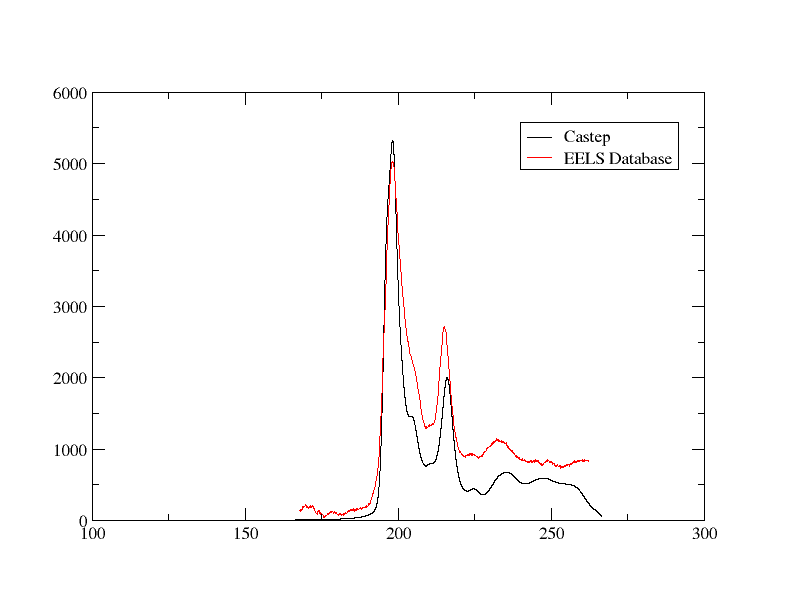

芯能级能量损失谱
cBN 的核心损耗谱计算
核心损耗计算有效地计算了电子从核心态跃迁到导带的概率。这有助于计算核心损耗（电离边缘）峰——通过进行这些计算，你可以得到实验中会观察到的峰值的模拟结果。 EELS 或者 XANES 谱图。
在本教程中，我们将考察对立方氮化硼（cBN）进行此类计算的结果，重点关注硼的K边。最后，我们将将其与谱图进行比较。 EELS 数据库.
我们将使用 cell 文件
cbn.cell
%block lattice_abc
2.5 2.5 2.5
60 60 60
%endblock lattice_abc
%block positions_frac
B 0.00 0.00 0.00
N 0.25 0.25 0.25
%endblock positions_frac
kpoints_mp_grid 10 10 10
spectral_kpoint_mp_grid 12 12 12
与 param 文件
cbn.param
请注意，通常需要比标准单个k点更多的谱k点，为了检验其是否收敛，你需要查看整个谱（而不是像某些其他收敛性测试那样仅检查单一值/结果）。此外，重要的是你不能有 SYMMETRY_GENERATE 用于核心损失计算。
运行 CASTEP 后，使用 Optados 输入文件运行 Optados
cbn.odi
TASK : core
DOS_SPACING : 0.01
BROADENING : adaptive # Default
ADAPTIVE_SMEARING : 0.4 # Default
CORE_GEOM : polycrystalline # Default
CORE_LAI_BROADENING : false # Default true
LAI_GAUSSIAN_WIDTH : 1.0
这条线 TASK : core 是决定是否进行核心损耗计算的因素。 CORE_GEOM : polycrystalline 也可以被替换为 core_geom : polarized，此时你还需要添加一条指定方向的语句——例如，
CORE_QDIR : 1 1 1
将模拟电子（或X射线）束沿[1 1 1]方向穿过单晶的结果。在本教程中，我们将研究多晶情况，其中实际上使用了所有方向的平均值。
运行 Optados 应该会生成两个感兴趣的文件： cbn_B1K1_core_edge.dat 并且 cbn_N1K1_core_edge.dat — 这些是核心电子损失计算的结果。我们将重点关注第一项 dat 文件——我们具体来看硼的部分。该文件开始部分如下
-15.720790912312673 0.0000000000000000
-15.710790160394351 0.0000000000000000
-15.700789408476030 0.0000000000000000
1st 列是能量和2并 是该能量下的（平滑）芯级损失。让我们尝试用 xmgrace 绘制 dat 文件——图表应看起来像

现在我们可以在结果中加入一些实验展宽，以更准确地模拟实验情况。你可以通过重新运行 Optados（无需重新运行 Castep）来实现这一点，方法如下： CORE_LAI_BROADENING 设置为 true 以及这些行
添加到 odi 文件：高斯展宽用于模拟实验仪器，且在整个光谱中保持一致；洛伦兹展宽用于模拟实验中的寿命效应，并随能量变化。
使用了1.8的高斯宽度，因为我们打算将其与谱在 EELS 数据库，且该实验的分辨率为1.8 eV。可以使用洛伦兹函数来考虑初始态和终态寿命引起的能量展宽。宽度取决于所研究元素和吸收边，推荐使用的值为 这里 （硼不存在，但碳推荐使用0.1，这值很接近。一个洛伦兹尺度为0.1是通用且常用的数值。）
现在重新运行它将产生3列在的 dat 文件 - 现在它开始像
-15.720790912312673 0.0000000000000000 4.6792920824784473E-005
-15.710790160394351 0.0000000000000000 4.7285842629847867E-005
1st 以及 2并 列相同，且为3rd 列是寿命和仪器（LAI）展宽的核心损失结果。
要使用xmgrace绘制该图，最简单的方法是运行 xmgrace -batch plot.bat 关于批处理文件
plot.bat
READ BLOCK "cbn_B1K1_core_edge.dat"
BLOCK XY "1:2"
S0 LEGEND "Unbroadened"
BLOCK XY "1:3"
S1 LEGEND "Broadened"
WORLD XMIN 0
这给出了下面的图表

包含一个核心空位
上述内容实际上是在计算电子被激发到导带的概率，这对应于X射线/电子与样品相互作用时能量的损失，从而产生XANES/EELS数据。然而，在进行该计算时，并未考虑由此产生的核心空穴（这种核心空穴自然会影响能量、态密度以及事件发生的概率）：必须将其纳入考量，以获得更真实的结果。
这是通过在描述势能时指定缺失的电子来简单实现的。 cell 文件。如果你查看一下 cbn.castep 该文件是先前生成的，你可能会看到赝势报告中包含以下行
这告诉我们用于硼的赝势类型。为了指定缺少一个1s电子，你只需添加 {1s1.00} 在末端：1s壳层仅有1个电子，缺少一个核心电子：一个核心空位。
进入 cbn.cell，并添加以下行
计算核心边缘数据时考虑缺失的1s电子。
说明
你的势能可能因 CASTEP 的版本而异，但请不用担心，因为计算步骤是相同的。
也添加这一行
CHARGE : +1
到 cbn.param 文件——必须这样做以保持电中性。接下来，重新运行 Castep。我们快速查看一下硼的赝势报告。 cbn.castep
============================================================
| Pseudopotential Report - Date of generation 29-07-2024 |
------------------------------------------------------------
| Element: B Ionic charge: 4.00 Level of theory: LDA |
| Atomic Solver: Koelling-Harmon |
| |
| Reference Electronic Structure |
| Orbital Occupation Energy |
| 2s 2.000 -0.865 |
| 2p 1.000 -0.654 |
| |
| Pseudopotential Definition |
| Beta l e Rc scheme norm |
| 1 0 -0.865 1.199 qc 0 |
| 2 0 0.250 1.199 qc 0 |
| 3 1 -0.654 1.199 qc 0 |
| 4 1 0.250 1.199 qc 0 |
| loc 2 0.000 1.199 pn 0 |
| |
| Augmentation charge Rinner = 0.838 |
| Partial core correction Rc = 0.838 |
------------------------------------------------------------
| "2|1.2|12|14|16|20:21(qc=8){1s1.00}" |
------------------------------------------------------------
| Author: Chris J. Pickard, Cambridge University |
============================================================
你应该注意到，2s 和 2p 轨道的能量更低，β 值各不相同，最重要的是，所使用的赝势是我们手动编写的那个：即 1s 轨道上仅有一个电子的赝势。
现在，重新运行 Optados。这将生成与之前相同的文件。再次，让我们重点关注硼的结果。输出文件 cbn_B1K1_core_edge.dat 现在开始像：
-16.879627404257498 0.0000000000000000 4.3418325679994708E-005
-16.869627177952179 0.0000000000000000 4.3433042280034070E-005
列代表的信息与之前相同。使用相同的批处理文件绘制它，我们得到如下图形：

超胞
核心空位的周期性像会相互作用。由于这种现象是不物理的，我们需要增加核心空位之间的距离。这通过构建一个超胞来实现。我们将创建一个 2x2x2 的超胞——超胞越大，模拟效果越好（因为能更有效地减少核心空位间的相互作用），但计算时间也会显著增加。有多种方法可以实现这一点，但本教程将介绍如何使用 Vesta首先，上传该 cell 我们用来的 Vesta 文件。从工具栏顶部进入 Edit -> Edit Data -> Unit cell...这应该会打开下面的窗口

点击 Transform...这打开了一个新窗口

为了创建 2x2x2 超胞，变换矩阵相当简单：将对角线元素设为 2，如上图所示（从而使每个方向都变为原来的 2 倍），然后点击 Ok. 选择 Search atoms in the new unit-cell and add them as new sites 在下一个弹出窗口中。
现在超胞已经生成，我们必须将其保存并转换为单元格文件。点击 File -> Export Data 并将其保存为 cbn.cif 文件（将其保存为一个） cell 文件不是选项）。我们可以使用 cif2cell cbn.cif 以获取如何构建新单元格的信息。最后，我们进行更改 cbn.cell 致：
cbn.cell
%block lattice_abc
5 5 5
60 60 60
%endblock lattice_abc
%block positions_frac
B:exi 0.0000000 0.0000000 0.0000000
B 0.0000000 0.0000000 0.5000000
B 0.0000000 0.5000000 0.0000000
B 0.0000000 0.5000000 0.5000000
B 0.5000000 0.0000000 0.0000000
B 0.5000000 0.0000000 0.5000000
B 0.5000000 0.5000000 0.0000000
B 0.5000000 0.5000000 0.5000000
N 0.1250000 0.1250000 0.1250000
N 0.1250000 0.1250000 0.6250000
N 0.1250000 0.6250000 0.1250000
N 0.1250000 0.6250000 0.6250000
N 0.6250000 0.1250000 0.1250000
N 0.6250000 0.1250000 0.6250000
N 0.6250000 0.6250000 0.1250000
N 0.6250000 0.6250000 0.6250000
%endblock positions_frac
kpoints_mp_grid 5 5 5
%block species_pot
B:exi 2|1.2|12|14|16|20:21(qc=8){1s1.00}
%endblock species_pot
spectral_kpoint_mp_grid 6 6 6
当超胞尺寸加倍时，你也可以将k点数减半：这可以在不损失精度的情况下使计算速度加快。然而，计算仍然需要显著更长的时间。
指定其中一个硼原子被称为 B:exi 并且通过修改势能块，使其只影响该原子，意味着我们仅模拟其中一个硼原子失去那个电子——通过这样做，我们避免了上述的相互作用问题。
在 param 文件，也添加该行
NEXTRA_BANDS : 100
这使得 Castep 对高能带进行计算，以防止核心损失值在高能区域突然急剧下降（你可能会注意到上述图中，在峰值之后数值降至零，但在实验中则趋于一个有限的非零值）。
重新运行 Castep 和 Optados。现在将有 16 个输出文件，而不再只是 2 个——每个原子都有一个核心边缘输出文件。 cbn_ B 1 K1 B:exi_core_edge.dat 这是硼元素缺少1s电子时的核心边缘结果。文件名中的空格可能有点不妥，因此我们将其重命名为 cbn_BExi.dat让我们以之前的方式绘制它

我们可以看到与数据库光谱的相似性。
与实验结果的比较
为了与实验结果进行良好的对比，我们将把数据库中的结果和我们的计算结果绘制在同一个图上。你可能已经注意到，尽管形状相似，但x轴和y轴的数值差异很大。y轴对应的是强度（而在我们的计算中更接近于概率），因此我们只需乘以一个常数即可对它进行缩放。x轴则只需加上一个固定值即可进行调整。
我们可以用一个简单的Python脚本调整我们的结果。
with open('cbn_BExi.dat', 'r') as infile, open('cbn_BExi_ss.dat', 'w') as outfile:
for line in infile:
columns = line.split()
col1 = float(columns[0]) + 180
col2 = float(columns[2]) * 1000000
outfile.write(f"{col1} {col2}\n")
现在让我们使用xmgrace和批处理文件将我们的CASTEP计算结果与实验数据一起绘图。
READ BLOCK "cbn_BExi_ss.dat"
BLOCK XY "1:2"
S0 LEGEND "Castep"
READ BLOCK "Dspec.60967.1.msa"
BLOCK XY "1:2"
S1 LEGEND "EELS Database"
输出应如下所示：

它们相当相似，但 Optados 计算在较高能量区域仍存在衰减更快的问题。